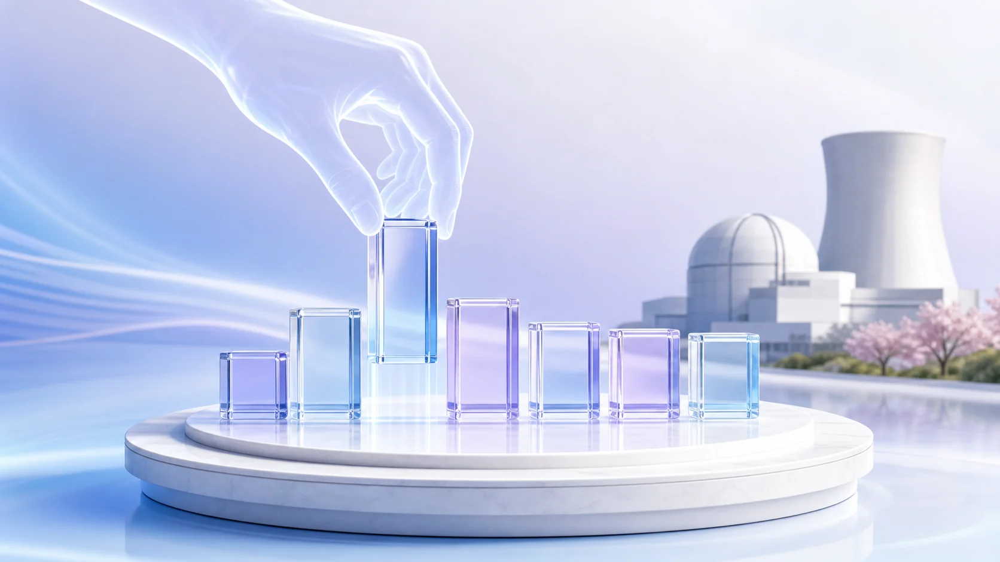
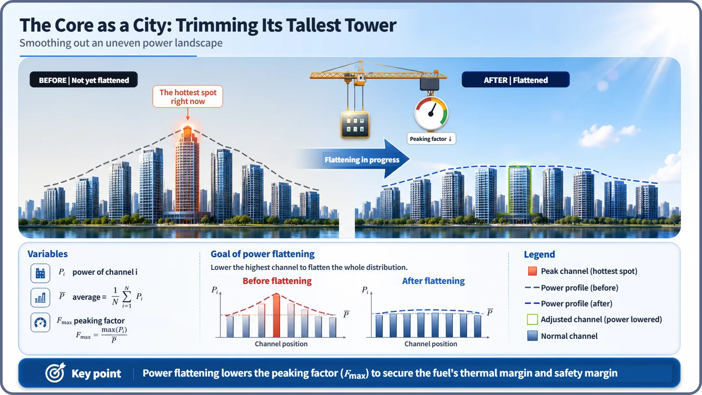
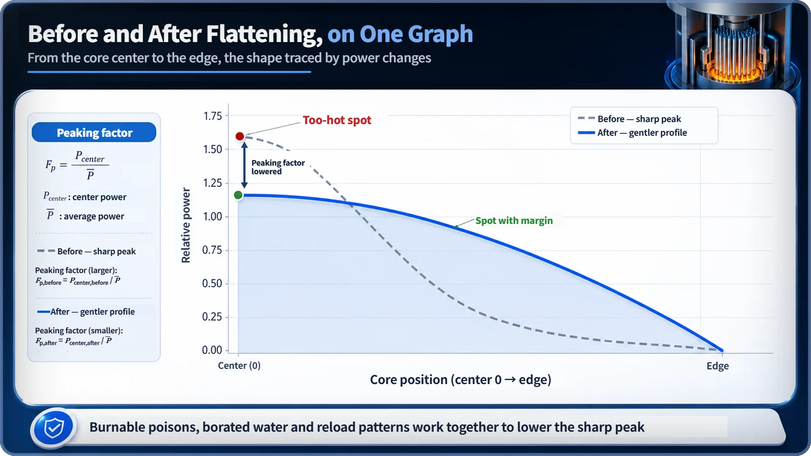

Neutron Physics & the Core · 100
Like a City Planner Trimming a Jagged Skyline — What It Means to Flatten the Power Distribution
Like a city planner trimming the tallest tower, designers use burnable poisons, borated water and smart reload patterns to keep core power from spiking at the center.

Flattening the power distribution means lowering the peaking factor, the ratio of the highest local power in the core to the average. Designers do it with three main tools, burnable poisons, borated water and reload patterns, and the reward is twofold: more safety margin against local thermal limits and room to raise the core's average power.
From garden to skyline
The middle of a reactor core naturally runs at higher power than its edge, because neutrons leak out near the edge. But designers don't leave that difference alone. Like a gardener pruning branches that shoot up too fast, they actively reshape this uneven power landscape.
A city planner wouldn't leave that spike standing
Picture the core as a city seen from the sky, with "high power" as "tall buildings." Left alone, the city ends up with a jagged skyline: towers downtown spike up and get lower toward the outskirts. Left as is, the load concentrates on a few towers' foundations. In a reactor, if power piles up in a few fuel locations at the center, those spots run thermally tight first, and the whole core's average power is held back by that single tightest spot.
The imbalance is managed with one number, the peaking factor:
Peaking factor = highest local power in the core ÷ average power of the whole core
The closer it is to 1, the more even the skyline; the larger it is, the more there's a spike somewhere, a locally hot spot. Flattening the power distribution means every design and operating technique that lowers this number.

Tool one: a temporary brace that burns itself away
Fresh fuel hasn't yet built up fission by-products, so its reactivity is higher than that of other fuel, like a new building shooting skyward unusually fast. So designers put a burnable poison inside the fresh fuel, typically gadolinia fuel, which has gadolinium oxide mixed in. "Poison" here is a reactor-physics term for "a material that absorbs neutrons well," not a chemical harmful to people; it is bound firmly in ceramic form inside the fuel pellets.
It slowly burns itself away as it absorbs neutrons, like temporary construction braces that remove themselves as the building settles. Early in the cycle it holds back the overgrowth of fresh fuel; later its role shrinks in step with the fuel's own falling reactivity. Unlike control rods, it is hands-off: load the set amount and it uses itself up.
Tool two: a citywide height-limit dial
In a pressurized water reactor, boric acid is dissolved in the coolant, and the boron absorbs neutrons. Because the coolant circulates evenly through the core, borated water acts almost uniformly on the whole core: it turns the height-limit dial for the entire city. It is less a chisel and more a big handle for adjusting the whole core's reactivity, which slowly declines as fuel burns, throughout the cycle, though combined with burnable poisons and control rods it also affects the local distribution indirectly.
Tool three: mixing new and existing buildings
A reactor is usually opened every one to two years to replace part of its fuel. Where the fresh fuel goes, and where the already-used, lower-reactivity fuel stays, is set by the reload pattern. Lower-reactivity fuel goes at the edge, where neutrons leak easily and power is low anyway, while fresh fuel goes toward the center, arranged like a chessboard with fuel of different burnups so fresh assemblies don't cluster.
| Tool | How it acts | Where and when |
|---|---|---|
| Burnable poison (e.g., gadolinia) | Absorbs neutrons and burns itself away | Local, mainly early in the cycle; passive |
| Borated water | Boron dissolved in the coolant absorbs neutrons | Whole core, throughout the cycle; concentration adjusted |
| Reload pattern | Places fuel of different burnups strategically | Whole core layout, set before each cycle |
| Control rods (not covered here) | Inserted and withdrawn to absorb neutrons | Local, real time; active |
What happens when the tools work together
The reload pattern is the big sketch drawn before the cycle begins; burnable poisons are local touch-ups early in the cycle; borated water is the big handle throughout. For a uniform cylindrical core with no adjustments, reactor physics textbooks commonly cite a conceptual figure: the peaking factor could theoretically climb to around 3. Commercial reactors that use these tools keep it much lower.

Lowering the peaking factor brings two things together. One is safety margin: no spot creeps up to its thermal limits, such as the fuel getting too hot or the coolant reaching its boiling limit. The other is economics: within those local limits, there's room to push up the core's average power, the electricity the plant can actually produce.
Misunderstandings the word "flattening" invites
Nothing is physically pressed flat; what's adjusted is the placement and concentration of neutron absorbers and the arrangement of fuel by burnup. A reload pattern isn't a random shuffle; it's a sophisticated optimization weighing neutron leakage, neighboring fuel reactivity and cooling margins. And although burnable poisons, borated water and control rods all absorb neutrons, their roles differ, as the table above shows.
Key takeaways
Power flattening covers all design and operating techniques that lower the peaking factor. Burnable poisons, borated water and reload patterns together trim the peak, buying safety margin against local thermal limits and room to raise average power. It isn't pressing hardware, and reloading isn't a random shuffle.